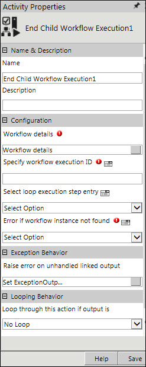

No
Activity Description
This activity enables the user to end a child workflow from the parent workflow.
Application Scenario
Consider a scenario where a child workflow is associated to the parent workflow. The parent workflow has an "Approval Activity". On the other hand, the child workflow contains a "Wait for Event" activity which is set to execute when a list item is deleted. This scenario, however, requires that if the user executes the approval activity in the parent workflow, the workflow need not wait for the completion of the child workflow which has the wait for event activity waiting to be executed. In such a scenario, the End Child Workflow Execution activity can be used to end the child workflow. This activity helps the user ensure that the parent workflow completes without any child workflow waiting for execution.
Refer to User Scenarios given in the User Guide for a detailed understanding of this activity.
Activity Properties
The End Child Workflow Execution activity has to be configured by specifying appropriate values for different properties in the Activity Properties pane. This pane can be accessed by clicking on the Activity Properties tool in the Tool Bar or by selecting the Activity Properties option from the context menu of End Child Workflow Execution activity. The Activity Properties are organized under the following groups of related properties. The properties under each group are described in this topic.

Name and Description
The properties in the Name & Description group have been described below. You can use these properties to specify the name and description for the activity.
Name - This property is to be used to specify a name for the activity.
Property Type: Mandatory (This property must be set.)
Description - This property can be used to specify a brief description to be displayed for the activity.
Property Type: Optional (This property needs to be set only if necessary.)
Configuration
The properties in this group have been described below. You can use these properties to configure the functionality of this activity.
Workflow Details - This property is used to specify the workflow which needs to be ended. The user has an option to either set this property or the Specify workflow execution ID property.
Property Type: Mandatory (This property must be set to end the workflow.)
See End Child Workflow: Workflow Details for a more detailed understanding of its properties.
Specify workflow execution ID - This property is used to specify the workflow execution ID of the child workflow. The user has an option to either set this property or the Workflow Details property.
Property Type: Mandatory (This property must be set to end the workflow.)
Steps to set Specify Workflow Execution ID
Specify Loop Execution Step Entry - This property is used to specify the name of the loop execution step entry activity used in the parent workflow.
Property Type: Optional (This property needs to be set only if necessary.)
Steps to set Select loop execution step entry
Error If Activity Instance Not Found: This property helps you to set the output of this activity as "Error encountered" or "Successful" when the workflow to be ended has already been executed or is yet to be executed.
Property Type: Mandatory (This property must be set to end the workflow.)
Yes: If this value is assigned, then the End Child Workflow Execution activity gives an output as "Error encountered" whenever the instance of the child workflow that is to be executed is not found. In other words, if the child workflow execution is not yet started or is already completed, then this error is encountered.
No: If this value is assigned, then the End Child Workflow Execution activity will give the output as "Successful".
Specify Value: This option can be used during the runtime execution of the workflow. You can assign the 'Yes' or 'No' values to a variable which will be used to know the value of this property. Alternatively, you can click the expression editor icon and select a variable assigned to the workflow in the expression editor window.
Exception Behavior
Each activity has the Raise Error on Unhandled Linked Output property on click of which, it shows all the default configured mapped error outputs in red with their check boxes selected.
See Mapped Error Outputs for more details.
Looping Behavior
The property in the Looping Behavior group has been described below. You can use this property to specify the looping behavior of the activity.
Loop through this action if output is - This property is used to specify the condition for looping the activity by selecting an activity output from the drop-down field.
Property Type: Optional (This property needs to be set only if necessary.)